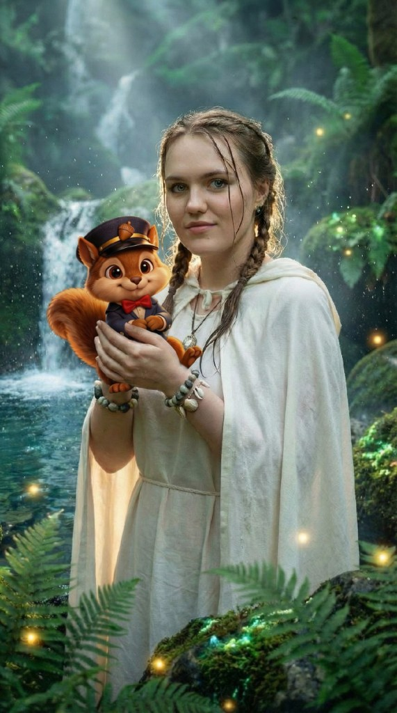
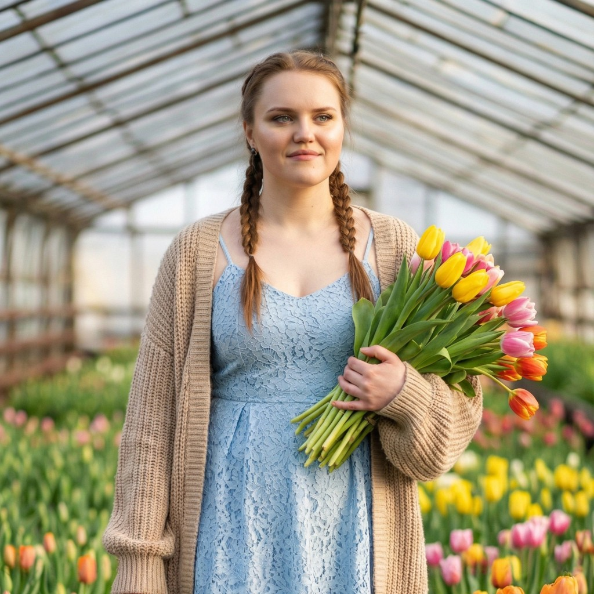
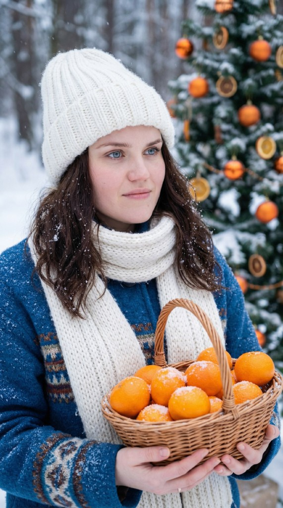
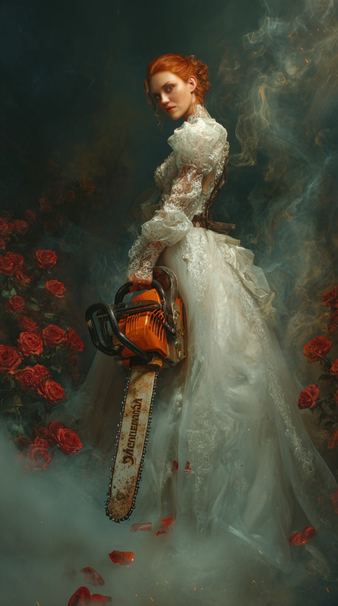

Волшебный лес
Сказочный портрет в атмосфере волшебного леса с персонажем-белкой. Тёплый свет и магическая среда.
Галерея визуальных экспериментов и AI-образов, созданных с помощью нейросетей

Сказочный портрет в атмосфере волшебного леса с персонажем-белкой. Тёплый свет и магическая среда.

Нежный образ с букетом тюльпанов в теплице. Мягкая весенняя палитра и естественный свет.

Зимний портрет с мандаринами и ёлкой. Уютная новогодняя атмосфера и тёплые акценты.

Сюрреалистичный портрет: контраст нежности и силы. Драматичный свет, розы и кинематографичная подача.